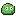
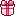
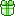
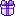
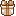

후원 보상
아래 개수와 정확히 같은 개수로 후원하면 게임에 바로 적용됩니다. 표에 없는 개수는 보상이 없습니다.
| 별풍선 | 보상 | 설명 |
|---|---|---|
| 10개 |  뼈고기 1개 뼈고기 1개 | 먹으면 체력 +20, 기력 +40 |
| 33개 |  몬스터 소환 1마리 | 후원받은 스트리머 주변에 몬스터가 나타납니다 |
| 50개 |  일반상자 1개 | 랜덤 아이템이 들어 있는 상자 |
| 100개 | 뼈고기 11개 | 먹으면 체력 +20, 기력 +40 |
| 200개 |  고급상자 1개 고급상자 1개 | 더 좋은 아이템이 들어 있는 상자 |
| 300개 | 시세공격 | 3일간 상점 가격이 아이템마다 +10~50% 오릅니다 |
| 310개 |  시세방어 시세방어 | 3일간 상점 가격이 아이템마다 -10~50% 내려갑니다 |
| 330개 | 몬스터 소환 10마리 | 후원받은 스트리머 주변에 몬스터가 나타납니다 |
| 444개 |  메테오 3개 메테오 3개 | 농장 작물 5×5칸을 경작 전 땅으로 되돌립니다 |
| 500개 | 일반상자 11개 | 랜덤 아이템이 들어 있는 상자 |
| 2,000개 | 고급상자 11개 | 더 좋은 아이템이 들어 있는 상자 |
| 4,444개 | 세금 징수 | 공용 자금의 50~80%를 징수합니다 |
보상은 스트리머가 게임에 접속해 있고 /숲로그인으로 연결된 상태에서만 들어옵니다. 상자, 랜덤 상자, 뼈고기는 /우편함으로 받습니다.
보상 설명
일반상자 · 고급상자
우편함으로 들어옵니다. 손에 들고 오른쪽 클릭하면 아래 확률표에 따라 아이템 하나가 나옵니다.
몬스터 소환
후원받은 스트리머 주변(2~6칸)의 빈 땅에 몬스터가 나타납니다. 여러 마리면 한 마리씩 따로 뽑고, 1초에 최대 10마리씩 나옵니다. 한 장소에는 최대 120마리까지 있을 수 있고, 넘으면 줄어들 때까지 기다렸다가 이어서 나옵니다. 병원, 농가(본채), 오두막에 있는 동안과 축제 중, 쓰러져 있는 동안에는 나오지 않고, 나오면 이어서 소환됩니다. 초희귀 몬스터가 나오면 서버 전체에 알림이 나옵니다.
세금 징수
공용 자금에서 50~80% 사이의 비율이 무작위로 정해져 빠집니다. 서버 전체에 영향을 줍니다.
시세공격 · 시세방어
상점에서 파는 아이템의 가격이 아이템마다 다르게 바뀝니다. 시세공격은 +10~50% 오르고, 시세방어는 -10~50% 내려갑니다. 3일(게임 날짜) 동안 유지되고, 그 사이에 새 시세공격이나 시세방어가 오면 새것으로 바뀝니다.
메테오
땅이 흔들리면서 농장에서 작물(씨앗 포함)이 가장 빽빽하게 심어진 곳에 메테오가 떨어집니다 (보상 1번에 3개). 여러 개면 서로 다른 곳에, 그다음으로 빽빽한 곳 순서로 떨어집니다. 떨어진 자리 5×5칸의 경작지는 작물·비료와 함께 경작하기 전 땅으로 돌아갑니다. 스프링클러·허수아비·울타리·상자 같은 설치물과 나무, 거대 작물은 그대로 남고, 플레이어는 다치지 않습니다.

묘목 랜덤 상자 ·
모자 랜덤 상자 ·
가구 랜덤 상자우편함으로 들어옵니다. 손에 들고 오른쪽 클릭하면 목록 중 하나가 같은 확률로 1개 나옵니다. 목록은 아래 확률표에 있습니다.
뼈고기
우편함으로 들어옵니다. 먹으면 체력 +20, 기력 +40 회복합니다.
확률표
일반상자에서 나오는 아이템
| 아이템 | 개수 | 확률 |
|---|---|---|
| 구리 주괴 | 1~3 | 12% |
| 철 주괴 | 1~3 | 9% |
| 금 주괴 | 1~3 | 5% |
| 이리듐 주괴 | 1~3 | 1% |
| 체리 폭탄 | 1~3 | 9% |
| 폭탄 | 1~3 | 6% |
| 기본 비료 | 1~3 | 10% |
| 고급 비료 | 1~3 | 7% |
| 나무 | 10 | 12% |
| 돌 | 10 | 12% |
| 조자 콜라 | 1~3 | 9% |
| 모자 랜덤 상자 | 1 | 4% |
| 가구 랜덤 상자 | 1 | 4% |
고급상자에서 나오는 아이템
| 아이템 | 개수 | 확률 |
|---|---|---|
| 구리 주괴 | 3~5 | 10% |
| 철 주괴 | 3~5 | 10% |
| 금 주괴 | 3~5 | 8% |
| 이리듐 주괴 | 3~5 | 3% |
| 묘목 랜덤 상자 | 3~5 | 8% |
| 체리 폭탄 | 3~5 | 9% |
| 폭탄 | 2~4 | 8% |
| 거대 폭탄 | 1~3 | 5% |
| 디럭스 비료 | 1~3 | 7% |
| 단단한 나무 | 3~5 | 10% |
| 커피 | 1~3 | 9% |
| 다이아몬드 | 1 | 3% |
| 모자 랜덤 상자 | 1 | 5% |
| 가구 랜덤 상자 | 1 | 5% |
묘목 랜덤 상자에서 나오는 묘목
8종 중 하나가 같은 확률(각 12.5%)로 1개 나옵니다.
살구나무 묘목 · 체리나무 묘목 · 복숭아나무 묘목 · 오렌지나무 묘목 · 망고 묘목 · 바나나 나무 묘목 · 사과나무 묘목 · 석류나무 묘목
모자 랜덤 상자에서 나오는 모자
122종 중 하나가 같은 확률(각 0.82%)로 1개 나옵니다.
ConcernedApe 모자 · 구리 냄비 · 개구리 모자 · 강철 선광 냄비 · 물방울무늬 머리 스카프 · 황금 선광 냄비 · 고깔모자 · 이리듐 선광 냄비 · 고블린 가면 · 공무원 모자 · 고양이 귀 · 궁수의 모자 · 공룡 모자 · 귀마개 · 기사의 투구 · 길의 모자 · 나비 리본 · 우아한 터번 · 낚시용 모자 · 흰색 터번 · 너구리 모자 · 녹색 터번 · 노움의 모자 · 마법 터번 · 닭 가면 · 도지사의 모자 · 대형 드워프 투구 · 밀짚모자 · 땡땡이 리본 · 디럭스 해적모 · 럭키 리본 · 레프러콘 모자 · 로고 캡 · 카우보이 모자 · 마녀 모자 · 파란 카우보이 모자 · 고글 · 붉은 카우보이 모자 · 방사능 고글 · 마법 카우보이 모자 · 선글라스 · 디럭스 카우보이 모자 · 민들레 · 어두운 카우보이 모자 · 미라 가면 · 방수모 · 미스터 치 모자 · 버섯 캡 · 미스테리 모자 · 벙거지 모자 · 블롭피쉬 가면 · 비니 · 뼈 장식 · 빨간 페즈 · 산타 모자 · 사냥꾼 모자 · 살아있는 모자 · 선원 모자 · 섬세한 리본 · 셰프 모자 · 소몰이 모자 · 솜브레로 · 수박 머리띠 · 스워시버클러 모자 · 스타 헬멧 · 스포츠 캡 · 신부의 면사포 · 신비한 모자 · 쓰레기 모자 · 실크해트 · 안대 · 안전모 · 애비게일의 리본 · 어두운 야구모자 · 어두운 벨벳 리본 · 우주 헬멧 · 어릿광대 모자 · 자두색 샤포 · 에밀리의 마법 모자 · 작은 캡 · 열대클립 · 조자 캡 · 오징어 모자 · 종이 모자 · 월계수 화환 왕관 · 중절모 · 인피니티 크라운 · 채집가의 모자 · 전사의 투구 · 카우걸 모자 · 종자의 투구 · 쿨 캡 · 주니모 모자 · 트럭 운전수 모자 · 쥐 귀 · 트리콘 모자 · 치의 가면 · 파티 모자 (3종) · 토템 가면 · 티아라 · 파란 끈리본 · 패션 모자 · 파란 리본 · 페도라 · 파란 보닛 · 페이지 보이 캡 · 파랑새 가면 · 편한 모자 · 판다 모자 · 프로펠러 모자 · 핑크 리본 · 플랫 톱 모자 · 해골 가면 · 해적모 · 호랑이 모자 · 헐렁한 비니 · 호박 가면 · 황금 투구 · 황금 가면 · 흰색 리본
가구 랜덤 상자에서 나오는 가구·벽지·바닥재
836종 중 하나가 같은 확률(각 0.12%)로 1개 나옵니다.
검은 쿠션 · 어두운 소파 · 어두운 책장 · 어두운 왕좌 · 어두운 카펫 · 몬스터 카펫 · 어두운 테이블 · 몬스터 벽장식 · 어두운 캣 트리 · 몬스터 벽난로 · 보라색 용 석상 · 녹색 용 석상 · 해골 · 해골 포스터 · 해적 깃발 · 해적 카펫 · 해적 더블 침대 · 마법사 소파 · 가마솥 · 마녀의 빗자루 · 룬 · 룬 카펫 · 마법사 램프 · 마법사 벽난로 · 마법사 서랍장 · 마법사 서재 · 마법사 스툴 · 마법사 엔드 테이블 · 마법사 의자 · 마법사 침대 · 마법사 쿠션 · 마법사 테이블 · 어두운 마법사 쿠션 · 마법사 티테이블 · 마법사의 탑 · 긴 영약 테이블 · 쌓여있는 영약 선반 · 쌓여있는 작은 영약 선반 · 영약 꾸러미 · 영약 두병 · 영약 선반 · 영약 테이블 · 작은 영약 선반 · 마법사 책꽂이 · 마법사 책장 · 작은 마법사 책장 · 짧은 마법사 책장 · 큰 마법사 책장 · 장식용 마법사 문 · 예술가의 책장 · 럭셔리한 책장 · 짧은 책장 · 갈색 책 · 떨어진 갈색 책 · 노란 책 · 떨어진 노란 책 · 보라 책 · 떨어진 보라 책 · 빨간 책 · 떨어진 빨간 책 · 초록색 책 · 떨어진 초록 책 · 파란 책 · 떨어진 파란 책 · 작은 책 더미 · 작은 책 무더기 · 책 더미 · 책 무더기 · 큰 책 더미 · 큰 책 무더기 · 안내 책자 보관장 · 수정구 · 봉제 주니모 · 토파즈 수정구 · 작은 봉제 주니모 (4종) · 루비 수정구 · 자수정 수정구 · 에메랄드 수정구 · 아쿠아마린 수정구 · 잠자는 노란 주니모 · 잠자는 보라 주니모 · 잠자는 빨간 주니모 · 잠자는 주황 주니모 · 잠자는 초록 주니모 · 잠자는 파란 주니모 · 잠자는 회색 주니모 · 주니모 별 · 어두운 주니모 쿠션 · 원형 주니모 카펫 · 사각 주니모 카펫 · 작은 주니모 매트 · 주니모 꽃 · 주니모 나무 · 주니모 꾸러미 · 주니모 매트 · 주니모 명판 · 주니모 벽걸이 명판 · 주니모 램프 · 주니모 벽난로 · 주니모 서랍장 · 주니모 소파 · 주니모 스툴 · 주니모 식물 · 주니모 엔드 테이블 · 주니모 의자 · 주니모 책장 · 주니모 침대 · 주니모 카펫 · 주니모 티테이블 · 주니모 쿠션 · 주니모 테이블 · 작은 주니모 오두막 · 작은 주니모 항아리 · 주니모 오두막 · 주니모 가방 · 큰 주니모 오두막 · 주니모 항아리 · 장식용 주니모 문 · 밀림 데칼 (4종) · 잎사귀 장식 (5종) · 밝은 잎사귀 벽 패널 · 어두운 잎사귀 벽 패널 · 잎사귀 벽 패널 · 토템폴 · 침대 (2종) · 더블 침대 (2종) · 열대 침대 · 열대 더블 침대 · 열대 TV · 열대 의자 · 밀림 횃불 · 루아우 테이블 · 늪지 식물 · 꽃 벽장식 · 작은 꽃 벽장식 · 야자 벽 장식 · 야자수 벽장식 · 실내용 야자수 · 긴 야자나무 · 모래 카펫 · 사막 깃발 · 사막 벽난로 · 사막 엔드 테이블 · 사막 의자 · 사막 테이블 · 사막 카펫 · 복고풍 꽃 · 복고풍 라디오 · 복고풍 램프 · 복고풍 매트 · 복고풍 배너 · 복고풍 벽난로 · 복고풍 사각 카펫 · 복고풍 서랍장 · 복고풍 소파 · 복고풍 식물 · 복고풍 스툴 · 복고풍 엔드 테이블 · 복고풍 의자 · 복고풍 찬장 · 복고풍 침대 · 복고풍 책장 · 복고풍 쿠션 · 복고풍 카펫 · 어두운 복고풍 쿠션 · 복고풍 테이블 · 복고풍 티테이블 · 큰 복고풍 카펫 · 장식용 복고풍 문 · 장식용 참나무 사다리 · 참나무 램프 엔드 테이블 · 참나무 벤치 · 참나무 서랍장 · 참나무 의자 · 참나무 엔드 테이블 · 참나무 테이블 · 참나무 티 테이블 · 마호가니 만찬 테이블 · 마호가니 램프 엔드 테이블 · 마호가니 벤치 · 마호가니 서랍장 · 마호가니 의자 · 마호가니 엔드 테이블 · 마호가니 테이블 · 마호가니 티 테이블 · 장식용 호두나무 사다리 · 호두나무 램프 엔드 테이블 · 호두나무 벤치 · 호두나무 서랍장 · 호두나무 의자 · 호두나무 엔드 테이블 · 호두나무 테이블 · 호두나무 티 테이블 · 자작나무 더블 침대 · 자작나무 램프 엔드 테이블 · 자작나무 벤치 · 자작나무 서랍장 · 자작나무 의자 · 자작나무 엔드 테이블 · 자작나무 테이블 · 자작나무 티 테이블 · J · J. 라이트 · J. 그림 · 사각 조자 카펫 · 쌓여있는 조자 상자 · 작은 조자 카펫 · 조자 금고 · 조자 램프 · 조자 벽난로 · 조자 본사 그림 · 조자 상자 · 조자 서랍장 · 조자 소파 · 조자 쇼핑카트 · 조자 스툴 · 조자 엔드 테이블 · 조자 의자 · 조자 책장 · 조자 침대 · 조자 카펫 · 조자 커피 테이블 · 조자 콜라 그림 · 조자 콜라 냉장고 · 조자 콜라 라이트 · 조자 콜라 장식 · 조자 콜라 캔 · 조자 테이블 · 조자 콜라 티테이블 · 조자 쿠션 · 큰 조자 상자 · 큰 조자 카펫 · 회색 조자 서랍장 · 회색 조자 책장 · 회색 조자 엔드 테이블 · 회색 조자 쿠션 · 회색 조자 커피 테이블 · 장식용 조자 문 · 모던 더블 침대 · 모던 엔드 테이블 · 모던 카펫 · 모던 테이블 · 현대 만찬 테이블 · 모던 티 테이블 · 현대 등 · 현대 벤치 · 현대 책장 · 눈 내린 카펫 · 겨울 만찬 테이블 · 겨울 엔드 테이블 · 겨울 의자 · 겨울 테이블 · 겨울 나무 장식 · 겨울 배너 · 겨울 별의 나무 · 밤하늘 장식 1 · 밤하늘 장식 2 · 밤하늘 장식 3 · 달 테이블 · 별과 달 카펫 · 수정 의자 · 별빛 더블 침대 · 분홍 사무용 의자 · 보라 사무용 의자 · 녹색 사무용 스툴 · 주황색 사무용 스툴 · 녹색 스툴 · 파란 스툴 · 붉은 식탁 의자 · 파란 식탁 의자 · 시골 의자 · 아침 의자 · 식탁용 의자 (2종) · 귀여운 의자 · 그루비 의자 · 녹색 쿠션 의자 · 분홍색 쿠션 의자 · 철제 의자 · 왕 의자 · 그루터기 의자 · 플라스틱 의자 · 목제 소파 · 곰팡이 핀 소파 · 노란 쿠션 · 초록 쿠션 · 노란 안락의자 · 녹색 안락의자 · 노란 소파 · 녹색 소파 · 빨간 쿠션 · 파란 쿠션 · 붉은 안락의자 · 파란 안락의자 · 붉은 소파 · 파란 소파 · 갈색 쿠션 · 바닥 TV · 갈색 안락의자 · 저렴한 TV · 갈색 소파 · 플라즈마 TV · 큰 갈색소파 · 구식 TV · 망가진 TV · 아동용 침대 · 파란 줄무늬 더블 침대 · 파란 줄무늬 침대 · 디럭스 더블 침대 · 딸기 더블 침대 · 와일드 더블 침대 · 이국적인 더블 침대 · 낚시꾼 더블 침대 · 둥근 창문 · 기본 창문 · 작은 창문 · 화려한 창문 · 목조장식 창문 · 철제 창문 · 삼각 창문 · 판자로 막은 창문 · 라디오 탁상 · 플라스틱 엔드 테이블 · 할머니의 엔드 테이블 · 와인 테이블 · 정령 테이블 · 음식이 가득한 만찬 테이블 · 돌 판 · 럭셔리 테이블 · 신석기 테이블 · 술집 테이블 · 축제 만찬 테이블 · 점쟁이 테이블 · 캔디 테이블 · 커피 테이블 · 태양 테이블 · 말린 해바라기 · 퍼즐 테이블 · 구불구불한 나무 · 디럭스 나무 · 긴 선인장 · 분재 나무 · 손질된 소나무 · 작은 소나무 · 인조 묘목 · 인조 식물 · 작은 화분 · 탁상 화분 · 이국적인 나무 · 장식용 나무 · 행운목 · 키 큰 실내용 화초 · 화려한 실내용 화초 (3종) · 실내용 화초 (20종) · 게시판 · 광부 장식 · 구름 데칼 (2종) · 달빛 해파리 배너 · 구명환 · 달력 · 닭 데칼 · 먼지 쌓인 두개골 · 딸기 장식 · 모형 비행기 · 배 모형 · 벽 호박 · 벽걸이 검 · 벽걸이 방패 · 벽걸이 촛대 (7종) · 벽걸이 시계 · 벽걸이 화분 · 세계지도 · 선인장 벽장식 · 생선 벽장식 · 얼음 배너 · 우주 정거장 데칼 · 월플라워 친구 · 이국적인 궁전 · 소 데칼 · 작은 벽 호박 · 피라미드 데칼 · 실내용 걸이식 바구니 · 전기 콘센트 · 전등 스위치 · 전시용 송어 · 천장 깃발 · 큰 빛 줄기 · 파스텔 배너 · 주기율표 · 피에르의 표지판 · 과일 샐러드 카펫 · 구대륙 카펫 · 꽃무늬 카펫 · 나무 카펫 · 녹색 시골집 카펫 · 바다 카펫 · 붉은 시골집 카펫 · 붉은 카펫 · 뼈 카펫 · 삼베 카펫 · 선박의 카펫 · 소용돌이 카펫 · 신비의 카펫 · 얼음 카펫 · 연녹색 카펫 · 조각보 카펫 · 큰 녹색 카펫 · 큰 붉은 카펫 · 큰 시골집 카펫 · 펑키 카펫 · 대나무 매트 · 돌 바닥재 · 캣 트리 · 개집 · 업라이트 피아노 · 어두운 개집 · 어두운 피아노 · 반려동물 물그릇 · 반려동물 사료 그릇 · 돌 벽난로 · 벽돌 벽난로 · 우아한 벽난로 · 이리듐 벽난로 · 곰 목조상 · 그루터기 횃불 · 노래하는 돌 · 레아의 목조상 · 늘보 해골 (좌) · 대식가의 동상 · 늘보 해골 (중) · 보보 조각상 · 늘보 해골 (우) · 웜버스 조각상 · 금전출납기 · 닻 · 다람쥐 조각상 · 닭 동상 · 타이어 · 묻혀있는 타이어 · 붉은 버섯 항아리 · 비닐 봉투 · 박스 등 · 시골 램프 · 새집 · 선인장 · 빨랫줄 · 식스팩 링 · 샘의 라디오 · 샘의 스케이트보드 · 알루미늄 캔 · 엎질러진 음료 · 스토브 벽난로 · 양초 등 · 우아한 항아리 · 장식용 나무통 · 이리듐 크로버스 · 작은 수정 · 장식용 검 · 장식용 등불 · 장식용 도끼 · 장식용 쇠스랑 · 장식용 삽 · 장식용 쓰레기통 · 장식용 접시 · 장식용 해치 · 전시용 정동석 · 찬장 · 지저분한 셔츠 · 초록 병 · 지저분한 반바지 · 파란 병 · 지구본 · 포장지 · 칼리코상 · 코트 걸이 · 클래식 등 · 화려한 등 · 평범한 횃불 · 흑요석 항아리 · 후탄 곰 · 후탄 토끼 · 큰 후탄 곰 · 공업용 파이프 · 나무 기둥 · 나무 패널 · 세라믹 기둥 · 통나무 패널 (2종) · 황금 기둥 · 칸막이 (좌) (7종) · 칸막이 (우) (8종) · 장식용 문 (6종) · 다채로운 그림 · 상형 문자 · 예술 사진 · 예술 사진 2 · 작은 나무 · 작은 액자 · 블루베리 · 블루 시티 · 붉은 독수리 · 인어 초상화 · 태양의 왕국 · 구름 · 1000년 후 · 나무 3그루 · 뱀 · 열대어 173 · 찰흙의 땅 · 내 첫 그림 · UFO · VGA 낙원 · 그루비 · 고속도로 89 · 공허 소용돌이 · 길 · 나뭇잎 그림 · 돼지 그림 · 마을 회관 · 무찌마루 · 물리학 101 · 바늘끝 꽃 · 바이너리 · 바닐라 빌라 · 별방울 · 보석 바다의 여왕 · 보트 · 비취 언덕 · 비취 언덕 (대) · 스타쉽 · 작은 친구들 · 스퀴드 키드 · 오두막 · 얼어붙은 꿈 · 추상 · 에코 언덕의 밤 · 연의 달인 '95 · 잔디의 춤 · 체커 · 첨탑 · 태고의 동작 · 칼리코 폭포 · 화산 사진 · 타버린 공물 · 태양 사구 · 태양 44 · 태양 45 · 용감한 작고 어린 나무 · 미스테리움 · 대초원의 왕의 여정: 극장판 · 웜버스 · 주주 시티 급행열차 · 콜드스타 목장의 기적 · 자연의 신비: 생기 넘치는 세상의 탐험 · 빗속의 울부짖음 · 샘 초상화 · 레아 초상화 · 세바스찬 초상화 · 마루 초상화 · 셰인 초상화 · 애비게일 초상화 · 알렉스 초상화 · 에밀리 초상화 · 엘리엇 초상화 · 페니 초상화 · 하비 초상화 · 헤일리 초상화 · 올해의 지점장 · 벽지 (121종) · 바닥재 (89종)
소환되는 몬스터
| 몬스터 | 확률 |
|---|---|
| 초록 슬라임 | 29.2% |
| 파란 슬라임 | 13.6% |
| 박쥐 | 12.5% |
| 벌레 | 10.4% |
| 애벌레 | 10.4% |
| 빨간 슬라임 | 5.2% |
| 서리 박쥐 | 5.2% |
| 먼지 정령 | 5.2% |
| 바위 게 | 4.2% |
| 용암 박쥐희귀 | 1% |
| 유령희귀 | 0.8% |
| 해골희귀 | 0.8% |
| 그림자 무사희귀 | 0.8% |
| 그림자 주술사초희귀 | 0.3% |
| 미라초희귀 | 0.1% |
| 날개 달린 뱀초희귀 | 0.3% |
확률과 보상은 운영 중에 바뀔 수 있습니다. 이 페이지는 서버 설정에서 자동으로 만들어집니다.